Todo lo que necesitas para manejar el cuadro de turnos de enfermería: marcar tu entrada y salida, pedir cambios, permisos y vacaciones, revisar tus horas y
hablar con tu equipo.
AutorSantiago Caicedo
Versión de la aplicación0.1.0
ParaEnfermeros/as y coordinadores/as
FechaOctubre de 2026
Contenido
1Instalar y abrir TurnoCareDescarga, instalación y primer ingreso
2Conoce la pantallaEl menú, los avisos y la página principal
3Guía para enfermeros/asMarcar, ver turnos, solicitudes, vacaciones, horas, pacientes y chat
4Guía para coordinadores/asPersonal, cuadro de turnos, aprobaciones, coberturas y correcciones
5Qué significa cada estadoTurnos, solicitudes, cuadro y filtro de aptos
6Preguntas frecuentesProblemas comunes y cómo resolverlos
Esta misma guía está dentro de la aplicación, en el menú Ayuda, con un botón para abrir cada pantalla.
1. Instalar y abrir TurnoCare
Instalación (una sola vez)
Descarga TurnoCare-Instalador-0.1.0.exe desde la página de descargas del proyecto: github.com/santyxswc/CuadroDeTurnos/releases
Haz doble clic en el archivo. No hay que elegir nada: se instala solo en unos segundos.
Al terminar, TurnoCare se abre sola y deja un ícono TurnoCare en el escritorio y en el menú Inicio. Las siguientes veces ábrela desde ese ícono.
Si Windows muestra «Windows protegió su PC», pulsa Más información y luego Ejecutar de todas formas. Aparece porque el instalador no tiene firma
digital (es un proyecto académico); no es un virus.
No necesitas internet, ni instalar nada más. Funciona en Windows 10 y 11 de 64 bits. Lo normal es instalarla en el computador de la estación de enfermería,
donde todo el equipo entra con su propio usuario.
Entrar por primera vez
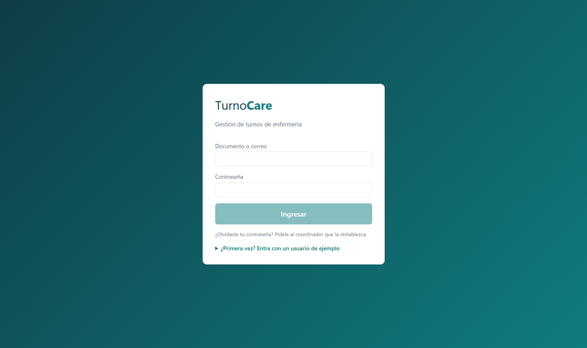
Pantalla de ingreso. «¿Primera vez?» llena los datos de un usuario de ejemplo.
Escribe tu número de documento y la contraseña que te entregó el coordinador, y pulsa Ingresar.
La primera vez la app te pide cambiar la contraseña por una tuya: mínimo 8 caracteres, con letras y números.
Si dejas la app sin usar 15 minutos, la sesión se cierra sola para proteger tus datos.
¿Solo quieres probarla? La app viene con un equipo de ejemplo. Pulsa ¿Primera vez? y elige un usuario (contraseña Demo2026):
coordinadora 52123456 (Laura Méndez) o enfermero 80234567 (Andrés Rojas).
2. Conoce la pantalla
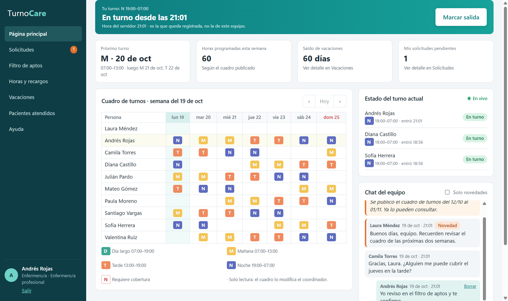
Página principal de un enfermero en turno.
El menú de la izquierda
Desde aquí te mueves por toda la app. Abajo ves tu nombre, tu cargo y el botón Salir.
Los números naranjas te avisan de lo que espera tu atención: solicitudes por responder o mensajes nuevos en el chat.
Los avisos
Cuando llega algo importante (una solicitud nueva, una novedad del chat) aparece un aviso abajo a la derecha. Púlsalo para ir a esa pantalla; si no,
desaparece solo.
La página principal
Arriba: tu turno actual y el botón para marcar entrada o salida.
Tarjetas: próximo turno, horas de la semana, saldo de vacaciones y solicitudes pendientes.
Cuadro de la semana: los turnos de todo el equipo. Usa ‹› para cambiar de semana y Hoy para volver.
Estado del turno actual: quién está trabajando, en vivo.
Chat del equipo: mensajes y novedades.
Lo que hace cada pantalla
Pantalla
Para qué sirve
Quién la ve
Página principal
Marcar entrada y salida, ver el cuadro de la semana, quién está en turno y el chat.
Todos
Editor de cuadro
Armar el cuadro del período, publicarlo y hacer cambios con motivo.
Coordinador/a
Solicitudes
Pedir intercambios, cesiones, permisos y vacaciones; responder lo que te piden.
Todos
Filtro de aptos
Ver quién puede tomar un turno sin quedar sobrecargado.
Todos
Horas y recargos
Horas del mes (diurnas, nocturnas, dominicales, extras) y valor estimado de los recargos.
Todos
Vacaciones
Saldo de días, simular fechas y pedir vacaciones.
Todos
Pacientes atendidos
Registrar cuántos pacientes atendiste en cada turno (solo el número).
Todos
Administración
Personal, tipos de turno, parámetros laborales, festivos y auditoría.
Coordinador/a
Ayuda
Esta guía dentro de la app.
Todos
3. Guía para enfermeros/as
Marcar mi entrada y mi salida
En la Página principal, pulsa Marcar entrada al llegar.
Aparece un aviso verde con la hora registrada. Se usa la hora del servidor, no la del computador.
Al terminar tu turno, pulsa Marcar salida.
Si pulsas dos veces seguidas no pasa nada: la segunda se ignora. Si olvidaste marcar, avísale al coordinador por el chat para que lo corrija.
Ver mis turnos
El cuadro de la semana está en la Página principal; tu fila aparece resaltada.
Tu próximo turno aparece en una tarjeta aparte, con los dos siguientes.
Un turno con borde rojo punteado quedó libre (por un permiso o vacaciones) y necesita a alguien que lo cubra.
Solicitudes: cambiar, ceder un turno o pedir un permiso
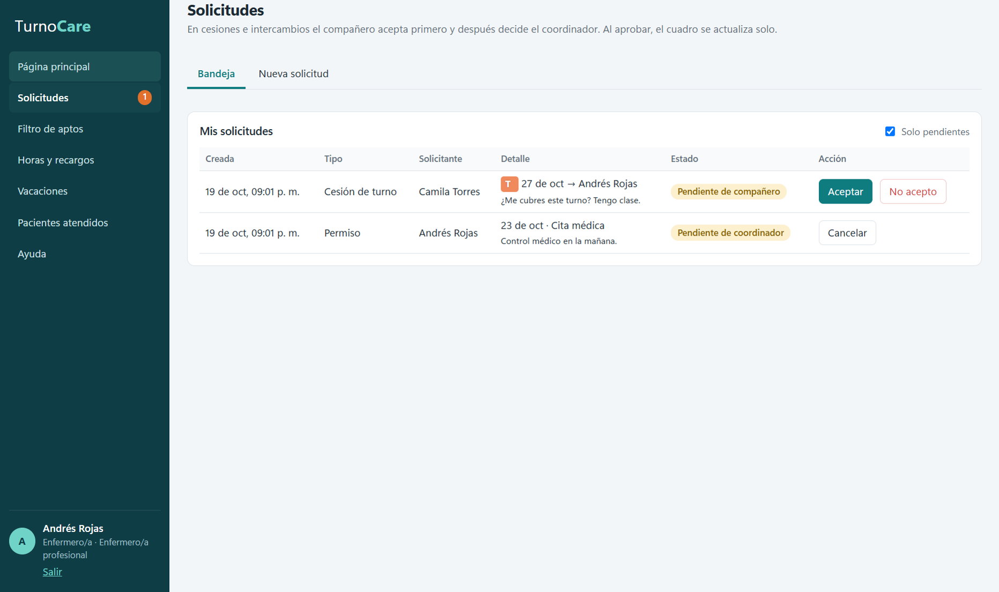
Bandeja de solicitudes: una cesión por responder y un permiso esperando al coordinador.
Ve a Solicitudes → Nueva solicitud.
Elige el tipo: Intercambio (cambias tu turno por uno de un compañero), Cesión (le das tu turno), Permiso o Vacaciones.
Completa los datos (turno, compañero, días, motivo) y envía.
En intercambios y cesiones, tu compañero debe Aceptar. Luego el coordinador aprueba.
Al aprobarse, el cuadro cambia solo. No hace falta avisar a nadie más.
Si un compañero te pide un cambio, verás un número naranja en Solicitudes. Abre la Bandeja y pulsa Aceptar o No acepto. Mientras tu
solicitud esté pendiente, puedes Cancelarla.
Si la app no te deja ceder un turno, es porque tu compañero quedaría sin el descanso mínimo, con demasiadas horas en la semana o con dos turnos el mismo día.
Revisa antes el Filtro de aptos.
Filtro de aptos: ¿quién puede tomar un turno?
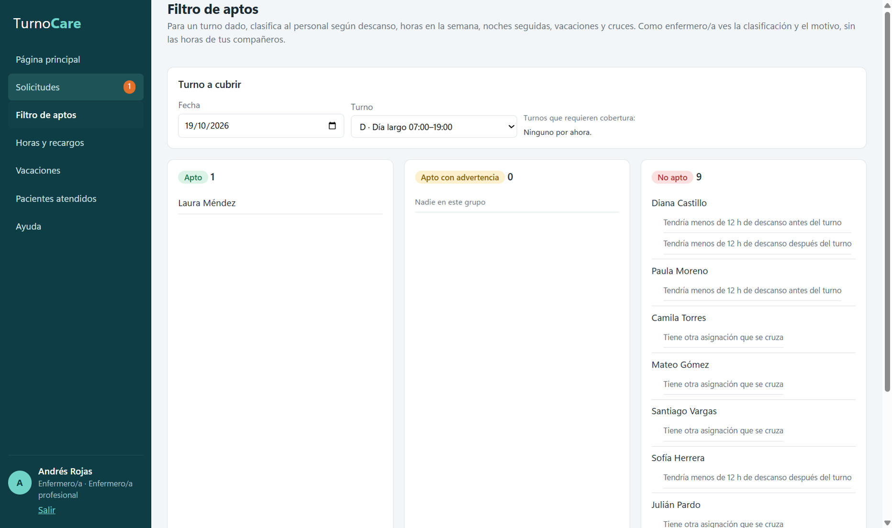
Para una fecha y un turno, la app clasifica al equipo en Apto, Apto con advertencia y No apto, con el motivo.
Elige la fecha y el turno, o pulsa uno de los turnos que requieren cobertura.
La app revisa descansos, horas de la semana, noches seguidas, vacaciones y cruces de turnos.
Aparece primero quien tiene menos carga. Como enfermero/a ves el motivo, pero no las horas de tus compañeros.
Revisar mis horas y recargos
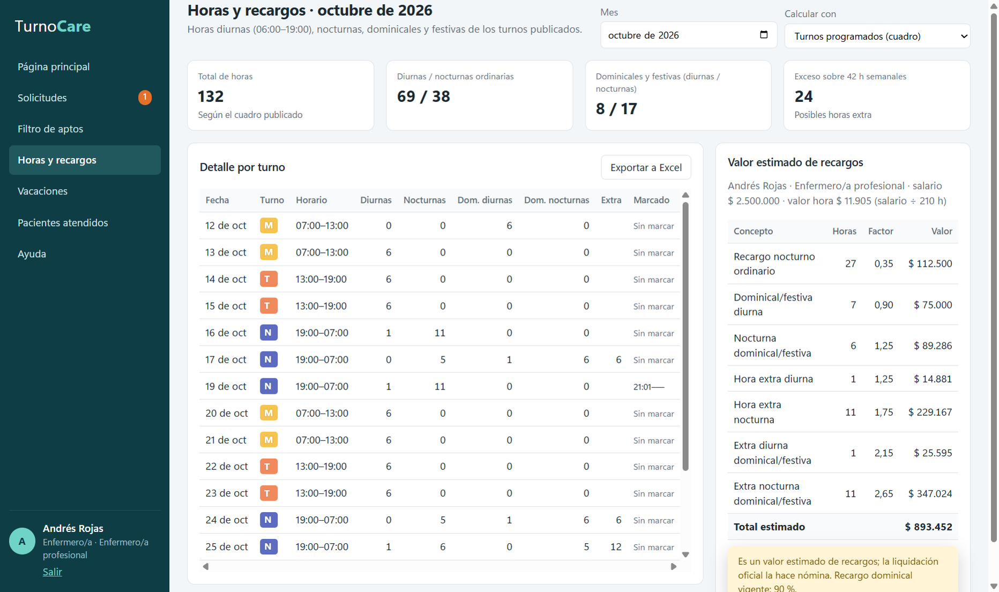
Horas del mes, detalle por turno y valor estimado de los recargos.
Abre Horas y recargos y elige el mes.
En Calcular con elige Turnos programados (según el cuadro) o Horas marcadas (lo que marcaste, que es lo que cuenta para nómina).
En el detalle ves cada turno, cuántas horas son diurnas, nocturnas, dominicales o extra, y a qué hora marcaste.
Exportar a Excel descarga el detalle.
El valor de los recargos es un estimado; el pago oficial lo hace nómina.
Pedir vacaciones
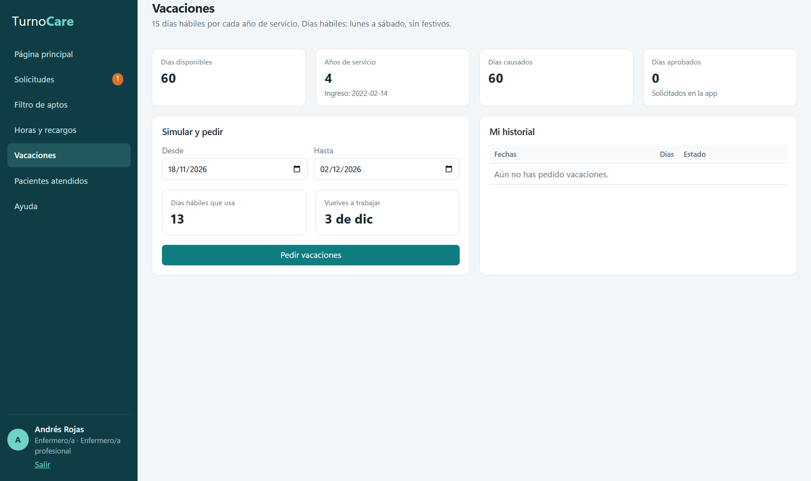
Saldo de días y simulador de fechas.
Abre Vacaciones. Arriba ves tus días disponibles: 15 días hábiles por cada año trabajado (lunes a sábado, sin festivos).
Elige desde y hasta. La app calcula los días hábiles que usas y qué día vuelves a trabajar.
Si algo no cuadra (poca anticipación o pocos días disponibles), aparece en rojo y no te deja enviar.
Pulsa Pedir vacaciones y sigue el estado en Solicitudes.
Registrar los pacientes que atendí
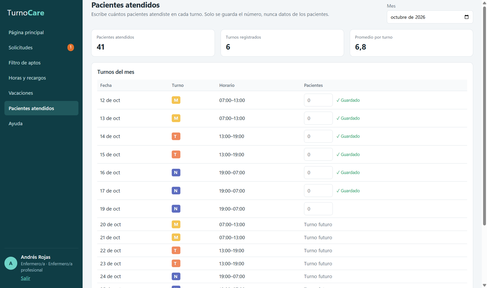
Solo se guarda el número de pacientes por turno, nunca sus datos.
Abre Pacientes atendidos.
Cuando tu turno ya empezó, escribe el número en la casilla del turno y pulsa Guardar.
Usar el chat del equipo
Escribe en la caja de abajo y pulsa Enter. Para cambiar de línea usa Shift + Enter.
Marca Novedad para avisos importantes: se resaltan en naranja y se pueden filtrar con Solo novedades.
Puedes borrar tu mensaje en los primeros 10 minutos.
Los mensajes Aviso del sistema los escribe la app sola: cuando se publica un cuadro o un turno queda sin cobertura.
La pantalla de Ayuda
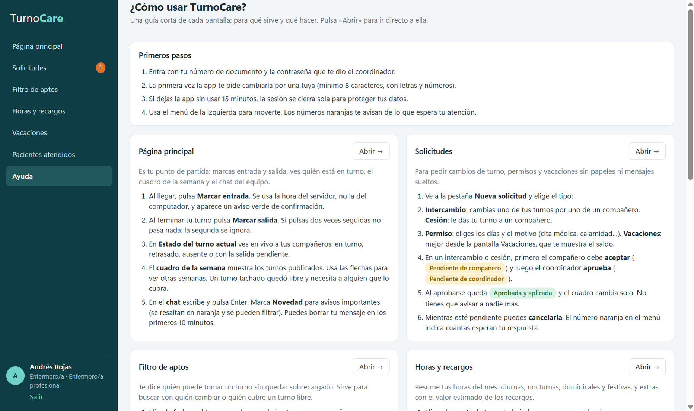
La guía dentro de la app, con un botón «Abrir →» en cada pantalla.
4. Guía para coordinadores/as
El coordinador puede hacer todo lo anterior y, además, ve las pantallas Editor de cuadro y Administración.
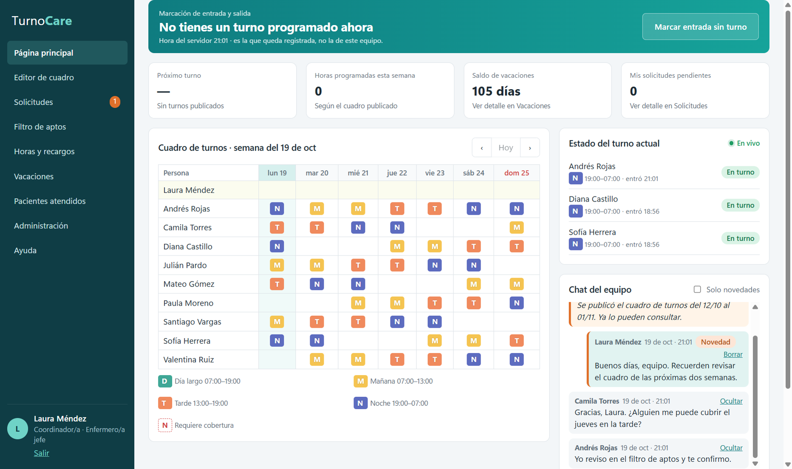
Página principal de la coordinadora: el número naranja indica una solicitud por aprobar.
Crear al personal
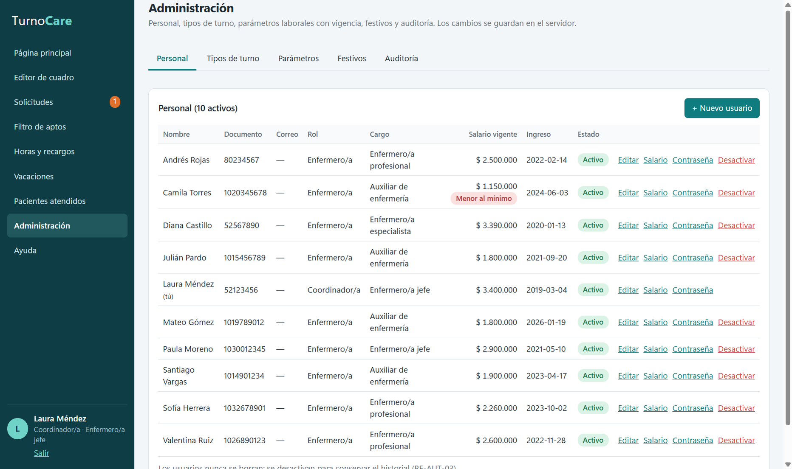
Administración → Personal.
Administración → Personal → + Nuevo usuario.
Llena documento, nombres, rol, cargo, fecha de ingreso y salario.
La app muestra una contraseña temporal: entrégasela a la persona. Al entrar, deberá cambiarla.
Contraseña: genera una nueva temporal si alguien la olvidó.
Desactivar: la persona ya no puede entrar, pero se conserva su historial. Los usuarios nunca se borran.
En las otras pestañas ajustas los tipos de turno (código, horario y color), los parámetros laborales (cada cambio rige desde una fecha, así no
se alteran los meses anteriores), los festivos (ya vienen los de Colombia) y consultas la auditoría.
Armar y publicar el cuadro de turnos
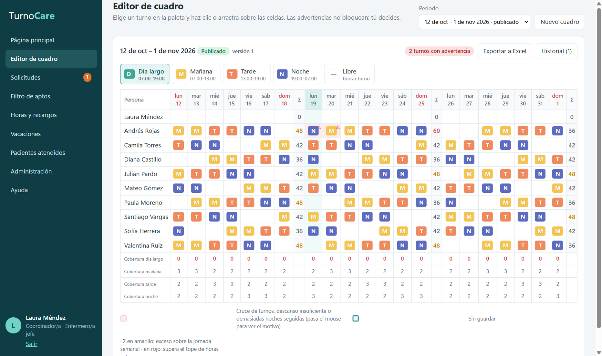
Editor de cuadro: paleta de turnos, grilla por persona y día, cobertura y horas por semana.
Editor de cuadro → Nuevo cuadro. Elige el período (máximo dos meses). Empieza como Borrador: solo tú lo ves.
Elige un turno en la paleta (M, T, N, D) y haz clic en las casillas, o arrastra para pintar varias. Libre borra. Atajos: la letra del
turno, o Supr para Libre.
Se guarda solo. Revisa las advertencias (avisan pero no bloquean), la fila de cobertura y la columna Σ con las horas por semana.
Pulsa Publicar cuadro. Todo el equipo lo ve al instante y el chat lo anuncia.
Exportar a Excel descarga el cuadro (una fila por persona, una columna por día).
Cambiar un cuadro publicado: pinta los cambios y escribe el motivo en la barra que aparece abajo. Se crea una versión nueva; en
Historial ves qué cambió, quién y por qué. Al terminar el período, pulsa Cerrar período.
Aprobar o rechazar solicitudes
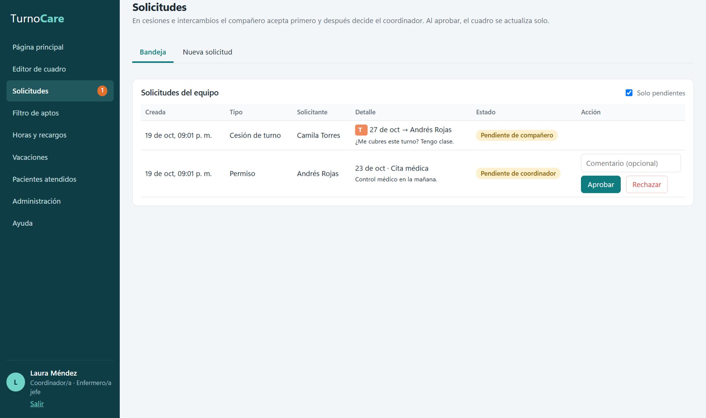
La bandeja del coordinador muestra las solicitudes de todo el equipo.
El número naranja en Solicitudes indica cuántas esperan tu respuesta.
En la Bandeja, pulsa Aprobar o Rechazar, con un comentario corto si quieres.
Antes de aprobar, la app vuelve a revisar que quien toma el turno esté apto. Al aprobar, el cuadro cambia solo.
Si apruebas un permiso o vacaciones, esos turnos quedan requiriendo cobertura: búscala en el Filtro de aptos y asígnala en el editor.
Corregir una marcación
Horas y recargos → elige la persona y el mes.
En el detalle, pulsa Corregir en el turno.
Elige si corriges la entrada o la salida, la hora correcta y el motivo. La corrección queda en la auditoría.
Moderar el chat
Pulsa Ocultar en cualquier mensaje que no corresponda. Deja de verse para todos y queda registrado en la auditoría.
5. Qué significa cada estado
Turno del día (Página principal → Estado del turno actual)
Estado
Significa
Programado
El turno aún no empieza.
En turno
La persona marcó su entrada.
Retrasado
El turno empezó y no ha marcado (pasada la tolerancia de 10 minutos).
Ausente
Pasó una hora sin marcar la entrada.
Salida pendiente
El turno terminó y no marcó la salida.
Finalizado
Marcó entrada y salida.
Solicitudes
Estado
Significa
Pendiente de compañero
Espera que el compañero acepte.
Pendiente de coordinador
Espera la aprobación del coordinador.
Aprobada y aplicada
Se aprobó y el cuadro ya cambió.
Rechazada
No se aprobó (por el coordinador o por el compañero).
Cancelada
Quien la pidió la retiró.
Cuadro de turnos
Estado
Significa
Borrador
En preparación; solo lo ve el coordinador.
Publicado
Lo ve todo el equipo; los cambios crean versiones.
Cerrado
Período terminado; ya no admite cambios.
Filtro de aptos
Estado
Significa
Apto
Puede tomar el turno.
Con advertencia
Puede, pero queda cerca del límite de horas.
No apto
Rompería una regla: descanso, cruce, ausencia o exceso de horas.
Turnos en el cuadro
Código
Horario
M · Mañana
07:00 a 13:00
T · Tarde
13:00 a 19:00
N · Noche
19:00 a 07:00 del día siguiente
D · Día largo
07:00 a 19:00
Estos son los turnos de fábrica; el coordinador puede cambiarlos en Administración → Tipos de turno.
6. Preguntas frecuentes
Olvidé marcar la entrada o la salida.
Avísale al coordinador por el chat. Él la corrige en Horas y recargos indicando el motivo.
Olvidé mi contraseña.
El coordinador te genera una temporal en Administración → Personal → Contraseña. Al entrar te pedirá cambiarla.
No me deja ceder mi turno.
Tu compañero quedaría sin descanso, con demasiadas horas o con dos turnos ese día. Mira el Filtro de aptos para ver quién sí puede.
Mi solicitud dice «Pendiente de compañero».
Tu compañero debe aceptarla desde su Bandeja. Le aparece un aviso y un número en el menú.
Un turno tiene el borde rojo punteado.
Quedó libre por un permiso o vacaciones aprobados y necesita a alguien que lo cubra. El chat también lo avisa.
En «Estado del turno actual» dice «Sin conexión».
La app se reconecta sola y vuelve a cargar los datos. Si no vuelve, cierra TurnoCare y ábrela de nuevo.
El saldo de vacaciones no coincide con lo que tengo.
La app cuenta las vacaciones aprobadas dentro de TurnoCare. Las tomadas antes de usar la app no aparecen; coméntalo con el coordinador.
¿Dónde se guardan los datos? ¿Cómo hago una copia?
En el mismo computador, en la carpeta %APPDATA%\TurnoCare\datos (escríbela en la barra del Explorador de archivos). Para hacer una copia de
seguridad, cierra la app y copia esa carpeta. Desinstalar la app no la borra.
¿Puedo abrir la app dos veces?
No. Si ya está abierta, al pulsar el ícono otra vez se trae al frente la ventana que ya tenías.